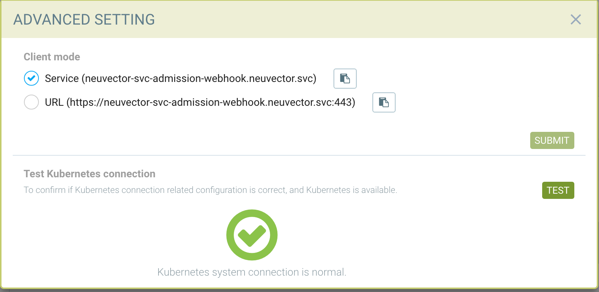

Contrôles d’admission
Contrôle des déploiements d’images / de conteneurs
Avec l’intégration du contrôle d’admission aux plateformes d’orchestration telles que Kubernetes et OpenShift, SUSE® Security joue un rôle important dans le pipeline de déploiement de la plateforme d’orchestration. Chaque fois qu’une ressource de cluster telle qu’un déploiement est créée, la demande du serveur d’API du cluster sera transmise à l’un des contrôleurs SUSE® Security pour déterminer si elle doit être autorisée à être déployée ou refusée en fonction des règles de contrôle d’admission définies par l’utilisateur, avant la création de la ressource de cluster. La décision de stratégie prise par SUSE® Security sera renvoyée au serveur d’API du cluster pour application.
Cette fonctionnalité est prise en charge dans Kubernetes 1.9+ et OpenShift 3.9+. Avant d’utiliser la fonction de contrôle d’admission dans SUSE® Security, bien qu’il soit possible de configurer le contrôle d’admission à partir de l’argument --admission-control passé au serveur d’API du cluster, il est recommandé d’utiliser le contrôle d’admission dynamique. Veuillez consulter les sections Kubernetes et OpenShift ci-dessous pour la configuration.
Kubernetes
Les plugins ValidatingAdmissionWebhook et MutatingAdmissionWebhook sont activés par défaut.
Vérifiez si admissionregistration.kubernetes.io/v1beta1 est activé
kubectl api-versions | grep admissionregistration
admissionregistration.k8s.io/v1beta1OpenShift
Les plugins ValidatingAdmissionWebhook et MutatingAdmissionWebhook ne sont pas activés par défaut. Veuillez consulter les exemples dans les sections de déploiement OpenShift pour obtenir des instructions sur la manière de les activer. Un redémarrage des services API et des contrôleurs OpenShift est requis.
Vérifiez si admissionregistration.kubernetes.io/v1beta1 est activé
oc api-versions | grep admissionregistration
admissionregistration.k8s.io/v1beta1Activation du contrôle d’admission (Webhook) dans SUSE® Security
La fonctionnalité de contrôle d’admission est désactivée par défaut. Veuillez vous rendre sur la page Stratégie → Contrôle d’admission pour l’activer dans la console SUSE® Security.

Une fois la fonctionnalité de contrôle d’admission activée avec succès, la ressource ValidatingWebhookConfiguration suivante sera créée automatiquement. Pour vérifier :
kubectl get ValidatingWebhookConfiguration neuvector-validating-admission-webhookExemple de sortie :
NAME CREATED AT
neuvector-validating-admission-webhook 2019-03-28T00:05:09ZL’information la plus importante dans la ressource ValidatingWebhookConfiguration pour SUSE® Security concerne les ressources du cluster. Actuellement, une fois qu’une ressource de cluster telle qu’un déploiement SUSE® Security est enregistrée et créée, la demande sera envoyée depuis le serveur d’API de la plateforme d’orchestration à l’un des SUSE® Security contrôleurs pour déterminer si elle doit être autorisée ou refusée en fonction des règles définies par l’utilisateur dans la page Stratégie SUSE® Security Contrôle d’admission →.
Si le déploiement de la ressource est refusé, un événement sera enregistré dans les Notifications.
Pour tester la connexion Kubernetes pour l’accès en mode client, allez dans Paramètres avancés.

Pour des cas spéciaux, la méthode d’accès par URL utilisant le service NodePort peut être requise.
Événements/Notifications de contrôle d’admission
Tous les événements de contrôle d’admission pour les événements autorisés et refusés peuvent être trouvés dans le menu Notifications → Risques de sécurité.
Critères de contrôle d’admission
SUSE® Security prend en charge de nombreux critères pour créer une règle de contrôle d’admission. Ceci inclut le nombre élevé de CVE, les noms de CVE, les étiquettes d’image, imageScanned, espace de noms, utilisateur, runAsRoot, etc. Il existe deux sources possibles pour l’évaluation des critères, les analyses d’images et les analyses de fichiers yaml de déploiement. Si un critère nécessite une analyse d’image, les résultats de l’analyse du registre seront utilisés. Si l’image n’a pas été analysée, la règle de contrôle d’admission ne sera pas appliquée. Si un critère nécessite l’analyse du fichier yaml de déploiement, il sera évalué à partir du déploiement Kubernetes. Certains critères utiliseront les résultats d’une analyse d’image OU d’une analyse de fichier yaml de déploiement.
-
Le score CVE est un exemple d’un critère nécessitant une analyse d’image.
-
Les variables d’environnement avec des secrets sont un exemple d’un critère utilisant l’analyse de fichier yaml de déploiement.
-
Les étiquettes et les variables d’environnement sont des exemples de critères qui utiliseront À LA FOIS les résultats des analyses d’images et de fichiers yaml de déploiement (OU logique) pour déterminer les correspondances.

Après la sélection du critère, les opérateurs possibles seront affichés. Cliquez sur le bouton ‘+’ pour ajouter chaque critère.
Utilisation de plusieurs critères dans une seule règle La logique de correspondance pour plusieurs critères dans une règle de contrôle d’admission est :
-
Pour différents types de critères dans une seule règle, appliquez 'et'
-
Pour plusieurs critères du même type (par exemple, plusieurs espaces de noms, registres, images),
-
Appliquez 'et' pour toutes les correspondances négatives ("ne contient pas", "n’est pas l’un de") jusqu’à la première correspondance positive ;
-
Après la première correspondance positive, appliquez 'ou'
-
Exemple avec correspondance d’une étiquette de Pod
apiVersion: apps/v1
kind: Deployment
metadata:
name: iperfserver
namespace: neuvector-1
spec:
replicas: 1
template:
metadata:
labels:
app: iperfserverLa règle à correspondre serait :

Exemple avec correspondance des variables d’environnement avec des secrets
apiVersion: apps/v1
kind: Deployment
metadata:
name: iperfserver
namespace: neuvector-1
labels:
name: iperfserver
spec:
selector:
matchLabels:
name: iperfserver
replicas: 1
template:
metadata:
labels:
name: iperfserver
spec:
containers:
- name: iperfserver
image: nvlab/iperf
env:
- name: env1
value: AIDAJQABLZS4A3QDU576
- name: env2
valueFrom:
fieldRef:
fieldPath: status.podIP
- name: env5
value: AIDAJQABLZS4A3QDU57E
command:
- iperf
- -s
- -p
- "6068"
nodeSelector:
nvallinone: "true"
restartPolicy: AlwaysLa règle de correspondance serait :

Critères liés aux résultats d’analyse
Les critères suivants sont liés aux résultats dans SUSE® Security Actifs > Page d’analyse du registre :
Image, imageScannée, cveHighCount, cveMediumCount, violations de conformité d’image, cveNames et autres.
Avant que SUSE® Security n’effectue la correspondance avec les règles de contrôle d’admission, SUSE® Security récupère les informations sur l’image (par exemple, 10.1.127.3:5000/neuvector/toolbox/iperf:latest) à partir du serveur apiserver du cluster
(Veuillez vous référer à la section Demande du serveur apiserver ci-dessous). L’image est constituée du serveur de registre (https://10.1.127.3:5000), du dépôt (neuvector/toolbox/iperf) et du tag (latest).
SUSE® Security utilise ces informations pour faire correspondre les résultats dans SUSE® Security Actifs → Page d’analyse du registre et collecte les données correspondantes, telles que le nom du CVE, le nombre de CVE à haute ou moyenne gravité, etc. Les violations de conformité d’image sont considérées comme toute image comportant des secrets ou des violations setuid/setgid. Si les utilisateurs utilisent l’image du registre Docker pour créer une ressource de cluster, normalement les informations du serveur de registre sont vides ou contiennent « docker.io », et actuellement SUSE® Security utilise les serveurs de registre codés en dur suivants pour correspondre au résultat de l’analyse du registre, au lieu d’une chaîne vide ou de « docker.io ». Bien sûr, s’il existe, en plus de ceux définis dans la page d’analyse du registre, d’autres serveurs de registre Docker pris en charge, SUSE® Security ne peut pas obtenir les résultats de l’analyse du registre avec succès.
Si les utilisateurs utilisent l’image intégrée telle qu’alpine ou ubuntu du registre Docker, il existe un nom d’organisation caché appelé library. Lorsque vous regardez les résultats pour l’image intégrée Docker dans SUSE® Security Assets > page d’analyse du registre, le nom du dépôt sera library/alpine ou library/ubuntu. Actuellement, SUSE® Security suppose qu’il n’y a qu’un seul nom d’organisation caché appelé library dans le registre Docker. S’il y en a plus d’un, SUSE® Security ne peut pas obtenir les résultats de l’analyse du registre avec succès non plus. La limitation ci-dessus pourrait également s’appliquer à d’autres types de serveurs de registre Docker, le cas échéant.
Créer des règles de critères personnalisés
Les utilisateurs peuvent créer un critère personnalisé à utiliser pour autoriser ou bloquer les déploiements en fonction des objets communs présents dans le yaml de l’image (analysé lors du déploiement). Sélectionnez l’objet à utiliser, par exemple imagePullSecrets, et la valeur correspondante, par exemple existe. Il est également recommandé d’utiliser des critères supplémentaires pour cibler davantage la règle, tels que l’espace de noms, PSP/PSA, conditions CVE, etc.

Explications des critères
Les critères avec une icône de disque nécessitent que l’image soit analysée (voir l’analyse du registre), et les critères avec une icône de fichier analyseront le yaml de déploiement. Si les deux icônes sont listées, alors la correspondance se fera pour l’une ou l’autre (OU). Si un critère nécessite une analyse d’image, mais que l’image n’est pas analysée, cette partie de la règle sera ignorée (c’est-à-dire que la règle est contournée, ou, si le yaml de déploiement est également listé, alors seul le yaml de déploiement sera utilisé pour la correspondance). Pour empêcher les images non analysées de contourner les règles, consultez le critère ImageScanned ci-dessous.
-
Ajouter un critère personnalisé. Sélectionnez l’objet dans le menu déroulant. Tous les critères personnalisés prennent en charge les opérateurs « existe » et « n’existe pas ». Pour ceux qui autorisent des valeurs, des opérateurs supplémentaires et une valeur peuvent être saisis. Les valeurs peuvent être statiques, séparées par des virgules, et inclure des caractères génériques.
-
Autoriser l’escalade de privilèges. Si le conteneur permet des escalades de privilèges, cela peut être bloqué en définissant 'Refuser' comme action.
-
Nombre de CVE de haute gravité. Cela prend les résultats d’une analyse d’image (registre) et correspond au nombre de CVE de haute gravité (scores CVSS de 7 ou plus). Un opérateur supplémentaire peut être ajouté pour restreindre la sélection aux CVE signalés un certain nombre de jours auparavant, donnant le temps pour la correction des CVE récents.
-
Nombre de CVE de haute gravité avec correctif. Cela prend les résultats d’une analyse d’image (registre) et identifie les CVE de haute gravité (scores CVSS de 7 ou plus), ET s’il existe un correctif disponible pour le CVE. Sélectionnez ceci si vous envisagez uniquement de bloquer les déploiements de CVE de haute gravité lorsqu’un correctif aurait dû être appliqué. Un opérateur supplémentaire peut être ajouté pour restreindre aux CVE signalés un certain nombre de jours auparavant, permettant de laisser le temps de remédier aux CVE récents.
-
Nombre de CVE de gravité moyenne. Cela prend les résultats d’une analyse d’image (registre) et compte le nombre de CVE de gravité moyenne (scores CVSS compris entre 4 et 6). Un opérateur supplémentaire peut être ajouté pour restreindre aux CVE signalés un certain nombre de jours auparavant, permettant de laisser le temps de remédier aux CVE récents.
-
Noms de CVE. Cela identifie des noms de CVE spécifiques (par exemple, CVE-2023-23914, 2023-23914, 23914 ou une chaîne de texte unique) où plusieurs sont séparés par des virgules.
-
Score CVE. Configurez à la fois le score minimum ainsi que le nombre de CVE atteignant ou dépassant le score CVSS minimum.
-
Variables d’environnement avec des secrets. Si le fichier yaml de déploiement ou le résultat du scan d’image contient (ou ne contient pas) des variables d’environnement avec des secrets. Voir les critères pour les secrets correspondants ci-dessous.
-
Variables d’environnement. Utilisez ceci pour exiger ou exclure certaines variables d’environnement dans le fichier yaml de déploiement ou dans le résultat de l’analyse d’image.
-
Image. Correspondance sur des noms d’image spécifiques, généralement combinée avec d’autres critères pour la règle.
-
Violations de conformité d’image. Correspond si l’analyse de l’image (registre) entraîne des violations de conformité. Voir conformité pour des détails sur les vérifications de conformité.
-
Image sans informations sur le système d’exploitation. Correspond si l’analyse de l’image (registre) entraîne l’incapacité de récupérer des informations sur le système d’exploitation.
-
Registre d’images. Correspond à des noms de registre d’images spécifiques. Utilisé pour restreindre les déploiements à certains registres ou exiger des déploiements uniquement à partir de certains registres approuvés. Souvent utilisé avec d’autres critères tels que les espaces de noms.
-
Image analysée. Exiger qu’une image soit analysée. Souvent utilisé pour s’assurer que toutes les images sont analysées afin de garantir que des critères basés sur l’analyse, tels que les CVE de gravité élevée, peuvent être appliqués aux déploiements.
-
Image signée. Exiger qu’une image soit signée via l’intégration de Sigstore/Cosign. Ce critère vérifie simplement s’il y a un vérificateur dans le résultat de l’analyse.
-
Vérificateurs d’image Sigstore. Exiger qu’une image soit signée par un nom de racine de confiance Sigstore spécifique, tel que configuré dans Assets → Vérificateurs Sigstore. Vérifie si les vérificateurs dans le résultat du scan correspondent aux vérificateurs dans la configuration de la règle.
-
Étiquettes. Exiger qu’une ou plusieurs étiquettes soient présentes dans le yaml de déploiement ou les résultats du scan d’image.
-
Modules. Exige ou exclut certains modules (paquets, bibliothèques) d’être présents dans l’image à la suite du scan de l’image (registre).
-
Monter des volumes. Utilisé typiquement pour empêcher certains volumes d’être montés.
-
Espace de noms. Autoriser ou restreindre les déploiements pour certains espaces de noms. Utilisé indépendamment mais souvent combiné avec d’autres critères pour limiter la correspondance de la règle à l’espace de noms.
-
Meilleure pratique PSP. Règles équivalentes pour PSP (note : PSP est complètement supprimé de Kubernetes 1.25+, cependant cet SUSE® Security équivalent peut encore être utilisé dans 1.25+). Inclut l’exécution en tant qu’utilisateur privilégié, l’exécution en tant qu’utilisateur root, le partage des espaces de noms PID de l’hôte, le partage des espaces de noms IPC de l’hôte, le partage du réseau de l’hôte, et l’autorisation de l’escalade de privilèges.
-
Configuration des limites de ressources (RLC). Exige que des limites de ressources soient configurées pour la limite/demande de CPU, la limite/demande de mémoire, et peut exiger que l’opérateur soit > ou <= à une valeur de ressource configurée.
-
Exécuter en tant qu’utilisateur privilégié. Utilisé typiquement pour limiter ou bloquer les déploiements de conteneurs privilégiés.
-
Exécuter en tant qu’utilisateur root. Utilisé typiquement pour limiter ou bloquer les déploiements de conteneurs exécutés en tant que root.
-
Rôle à haut risque lié au compte de service. Peut correspondre à plusieurs critères qui pourraient représenter un rôle de compte de service à haut risque, y compris la liste des secrets, l’exécution de toutes les opérations sur les charges de travail, la modification des ressources RBAC, la création de ressources de charge de travail et l’autorisation d’exécution dans un conteneur.
-
Partager les espaces de noms IPC de l’hôte. Correspond aux espaces de noms IPC.
-
Partager le réseau de l’hôte. Autoriser ou interdire les déploiements à partager le réseau de l’hôte.
-
-
Partager les espaces de noms PID de l’hôte. Correspond aux espaces de noms PID.
-
-
Utilisateur. Autoriser ou interdire les utilisateurs liés par kubernetes définis à l’exécution, visibles dans le champ userInfo. Remarque : La fonction d’audit yaml (téléchargement) ne pourra pas vérifier cela car elle est liée à l’exécution.
-
Groupes d’utilisateurs. Autoriser ou interdire les groupes d’utilisateurs liés par kubernetes définis à l’exécution, visibles dans le champ userInfo. Remarque : La fonction d’audit yaml (téléchargement) ne pourra pas vérifier cela car elle est liée à l’exécution.
-
Enfreint la politique PSA. Correspond si le déploiement enfreint soit une politique PSA Restreinte soit une politique PSA de Base Pod Security Standard (équivalent aux définitions PSA dans kubernetes 1.25+)
Détection des secrets.
La détection des secrets, par exemple dans les variables d’environnement, est effectuée à l’aide de la regex suivante :
Rule{Description: "Password.in.YML",
Expression: `(?i)(password|passwd|api_token)\S{0,32}\s*:\s*(?-i)([0-9a-zA-Z\/+]{16,40}\b)`, ExprFName: `.*\.ya?ml`, Tags: []string{share.SecretProgram, "yaml", "yml"},
Suggestion: msgReferVender},Dans la page Rapports de Risque, lorsque des secrets sont détectés, le format d’alerte sera affiché avec des informations de sortie générales montrant comme "${variable}=${value}". Comme exemple dans l’image ci-dessous, cela peut être vu avec la variable "env1=AIDAJQ…".
Une liste des types de secrets détectés peut être trouvée ici
Modes de contrôle d’admission
Il existe deux modes que SUSE® Security prend en charge - Surveiller et Protéger.
-
Surveiller : un message d’alerte est enregistré dans le journal des événements si une décision est refusée. Dans ce cas, l’apiserver du cluster est autorisé à créer une ressource avec succès. Remarque : même si l’action de la règle est Refuser, en mode Surveiller, cela ne fera qu’alerter.
-
Protéger : il s’agit d’un mode de protection en ligne. Une fois qu’une décision est refusée, la ressource du cluster ne pourra pas être créée avec succès, et un événement sera enregistré.
Règles de contrôle d’admission
Les règles peuvent être des règles Autoriser (liste blanche) ou Refuser (liste noire). Les règles sont évaluées dans l’ordre affiché, de haut en bas. Les règles Autoriser sont évaluées en premier et sont utiles pour définir des exceptions (sous-ensembles) aux règles Refuser. Si un déploiement de ressource ne correspond à aucune règle, l’action par défaut est d’Autoriser le déploiement.
Il existe deux règles préconfigurées qui doivent être autorisées pour activer les conteneurs système Kubernetes et les déploiements SUSE® Security.
Les règles de contrôle d’admission s’appliquent à toutes les ressources qui créent des pods (par exemple, déploiements, daemonsets, replicasets, etc.).
Pour les règles de contrôle d’admission, l’ordre de correspondance est :
-
Règles d’autorisation par défaut (par exemple, espaces de noms système)
-
Règles d’autorisation fédérées (si elles existent)
-
Règles de refus fédérées (si elles existent)
-
Règles d’autorisation appliquées CRD (si elles existent)
-
Règles de refus appliquées CRD (si elles existent)
-
Règles d’autorisation définies par l’utilisateur
-
Règles de refus définies par l’utilisateur
-
Autoriser la demande si elle ne correspond à aucun critère de règle ci-dessus
Dans chacune des étapes de correspondance (1 à 7), l’ordre des règles n’a pas d’importance. Tant que la demande correspond à un critère de règle, l’action (autoriser ou refuser) est prise et la demande est autorisée ou refusée.
Résultats de scan fédérés dans les règles de contrôle d’admission
Le cluster principal (maître) peut scanner un registre/dépôt désigné comme registre fédéré. Les résultats de scan de ces registres seront synchronisés à tous les clusters gérés (distants). Cela permet d’afficher les résultats de scan dans la console du cluster géré ainsi que d’utiliser les résultats dans les règles de contrôle d’admission du cluster géré. Les registres n’ont besoin d’être scannés qu’une seule fois au lieu de par chaque cluster, réduisant ainsi l’utilisation du CPU/mémoire et de la bande passante réseau. Voir la section multi-cluster pour plus de détails.
Configuration des vérificateurs Sigstore/Cosign pour exiger la signature d’image
Veuillez consulter cette section pour configurer les vérificateurs.
Dépannage
Si vous rencontrez des erreurs et que vous avez accès au nœud maître, vous pouvez inspecter le journal kube-apiserver pour rechercher des événements de webhook d’admission. Exemples :
W0406 13:16:49.012234 1 admission.go:236] Failed calling webhook, failing open neuvector- validating-admission-webhook.neuvector.svc: failed calling admission webhook "neuvector-validating- admission-webhook.neuvector.svc": Post https://neuvector-svc-admission- webhook.neuvector.svc:443/v1/validate/1554514310852084622-1554514310852085078?timeout=30s: dial tcp: lookup neuvector-svc-admission-webhook.neuvector.svc on 8.8.8.8:53: no such hostLe journal ci-dessus indique que le kube-apiserver du cluster est incapable d’envoyer la demande au webhook SUSE® Security avec succès car il ne parvient pas à résoudre le nom neuvector-svc-admission-webhook.neuvector.svc.
W0405 23:43:01.901346 1 admission.go:236] Failed calling webhook, failing open neuvector- validating-admission-webhook.neuvector.svc: failed calling admission webhook "neuvector-validating- admission-webhook.neuvector.svc": Post https://neuvector-svc-admission-webhook.neuvector.svc:443/v1/validate/1554500399933067744-1554500399933068005?timeout=30s: net/http: request canceled while waiting for connection (Client.Timeout exceeded while awaiting headers)Le journal ci-dessus indique que le kube-apiserver du cluster est incapable d’envoyer la demande au webhook SUSE® Security avec succès car il résout le nom neuvector-svc-admission-webhook.neuvector.svc avec la mauvaise adresse IP. Cela pourrait également indiquer un problème de connectivité réseau ou un problème de passerelle de périmètre de sécurité entre l’api-server et les nœuds de contrôleur.
W0406 01:14:48.200513 1 admission.go:236] Failed calling webhook, failing open neuvector- validating-admission-webhook.xyz.svc: failed calling admission webhook "neuvector-validating- admission-webhook.xyz.svc": Post https://neuvector-svc-admission- webhook.xyz.svc:443/v1/validate/1554500399933067744-1554500399933068005?timeout=30s: x509: certificate is valid for neuvector-svc-admission-webhook.neuvector.svc, not neuvector-svc-admission- webhook.xyz.svcLe journal ci-dessus indique que le kube-apiserver du cluster peut envoyer la demande au webhook SUSE® Security avec succès mais que le certificat dans caBundle est incorrect.
W0404 23:27:15.270619 1 admission.go:236] Failed calling webhook, failing open neuvector- validating-admission-webhook.neuvector.svc: failed calling admission webhook "neuvector-validating- admission-webhook.neuvector.svc": Post https://neuvector-svc-admission- webhook.neuvector.svc:443/v1/validate/1554384671766437200-1554384671766437404?timeout=30s: service "neuvector-svc-admission-webhook" not foundLe journal ci-dessus indique que le kube-apiserver du cluster est incapable d’envoyer la demande au webhook SUSE® Security avec succès car le service neuvector-svc-admission-webhook est introuvable.
Réviser les Configurations de contrôle d’admission
Tout d’abord, vérifiez votre version de Kubernetes ou OpenShift. Le contrôle d’admission est pris en charge dans Kubernetes 1.9+ et OpenShift 3.9+. Pour OpenShift, assurez-vous d’avoir modifié le fichier master-config.yaml pour ajouter la configuration MutatingAdmissionWebhook et redémarré les serveurs API principaux.
Vérifiez le Clusterrole
kubectl get clusterrole neuvector-binding-admission -o jsonAssurez-vous que les verbes incluent :
"get",
"list",
"watch",
"create",
"update",
"delete"Ensuite, vérifiez :
kubectl get clusterrole neuvector-binding-app -o jsonAssurez-vous que les verbes incluent :
"get",
"list",
"watch",
"update"Si les verbes ci-dessus ne sont pas listés, le bouton Test échouera.
Vérifiez le Clusterrolebinding
kubectl get clusterrolebinding neuvector-binding-admission -o jsonAssurez-vous que le ServiceAccount est correctement configuré :
"subjects": [
{
"kind": "ServiceAccount",
"name": "default",
"namespace": "neuvector"Vérifiez la configuration du Webhook
kubectl get ValidatingWebhookConfiguration --as system:serviceaccount:neuvector:default -o yaml > nv_validation.txtLe fichier nv_validation.txt devrait avoir un contenu similaire à :
Cliquez ici pour plus de détails
apiVersion: v1
items:
- apiVersion: admissionregistration.k8s.io/v1beta1
kind: ValidatingWebhookConfiguration
metadata:
creationTimestamp: "2019-09-11T00:51:08Z"
generation: 1
name: neuvector-validating-admission-webhook
resourceVersion: "6859045"
selfLink: /apis/admissionregistration.k8s.io/v1beta1/validatingwebhookconfigurations/neuvector-validating-admission-webhook
uid: 3e1793ed-d42e-11e9-ba43-000c290f9e12
webhooks:
- admissionReviewVersions:
- v1beta1
clientConfig:
caBundle: {.........................}
service:
name: neuvector-svc-admission-webhook
namespace: neuvector
path: /v1/validate/{.........................}
failurePolicy: Ignore
name: neuvector-validating-admission-webhook.neuvector.svc
namespaceSelector: {}
rules:
- apiGroups:
- '*'
apiVersions:
- v1
- v1beta1
operations:
- CREATE
resources:
- cronjobs
- daemonsets
- deployments
- jobs
- pods
- replicasets
- replicationcontrollers
- services
- statefulsets
scope: '*'
- apiGroups:
- '*'
apiVersions:
- v1
- v1beta1
operations:
- UPDATE
resources:
- daemonsets
- deployments
- replicationcontrollers
- statefulsets
- services
scope: '*'
- apiGroups:
- '*'
apiVersions:
- v1
- v1beta1
operations:
- DELETE
resources:
- daemonsets
- deployments
- services
- statefulsets
scope: '*'
sideEffects: Unknown
timeoutSeconds: 30
kind: List
metadata:
resourceVersion: ""
selfLink: ""Si vous voyez un contenu comme "Erreur du serveur …." ou "… est interdit", cela signifie que le compte de service du contrôleur NV n’a pas les droits d’accès pour la ressource ValidatingWebhookConfiguration. Dans ce cas, cela signifie généralement que le clusterrole/clusterrolebinding neuvector-binding-admission a un problème. Supprimer et recréer le clusterrole/clusterrolebinding neuvector-binding-admission est généralement la solution la plus rapide.
Testez le bouton de connexion du contrôle d’admission
Dans la console SUSE® Security dans la stratégie → du contrôle d’admission, allez dans Plus d’opérations → Paramètres avancés et cliquez sur le bouton "Tester". SUSE® Security modifiera le service neuvector-svc-admission-webhook et vérifiera si notre serveur webhook peut recevoir la notification de changement ou si cela échoue.
-
Exécutez :
kubectl get svc neuvector-svc-admission-webhook -n neuvector -o yamlLe résultat doit ressembler à :
apiVersion: v1 kind: Service metadata: annotations: ................... creationTimestamp: "2019-09-10T22:53:03Z" labels: echo-neuvector-svc-admission-webhook: "1568163072" //===> from last test. could be missing if it's a fresh NV deployment tag-neuvector-svc-admission-webhook: "1568163072" //===> from last test. could be missing if it's a fresh NV deployment name: neuvector-svc-admission-webhook namespace: neuvector ................... spec: clusterIP: 10.107.143.177 ports: - name: admission-webhook port: 443 protocol: TCP targetPort: 20443 selector: app: neuvector-controller-pod sessionAffinity: None type: ClusterIP status: loadBalancer: {} -
Maintenant, cliquez sur → le bouton "Tester" des paramètres avancés du contrôle d’admission. Attendez qu’il affiche succès ou échec. SUSE® Security modifiera implicitement l’étiquette tag-neuvector-svc-admission-webhook du service neuvector-svc-admission-webhook.
-
Attendez l’opération interne du contrôleur. Si le serveur webhook SUSE® Security reçoit une demande de mise à jour de kube-apiserver concernant ce changement de service, SUSE® Security modifiera l’étiquette echo-neuvector-svc-admission-webhook du service neuvector-svc-admission-webhook pour qu’elle ait la même valeur que l’étiquette tag-neuvector-svc-admission-webhook.
-
Exécutez :
kubectl get svc neuvector-svc-admission-webhook -n neuvector -o yamlLe résultat doit ressembler à
apiVersion: v1 kind: Service metadata: annotations: ............. creationTimestamp: "2019-09-10T22:53:03Z" labels: echo-neuvector-svc-admission-webhook: "1568225712" //===> changed in step 3-3 after receiving request from kube-apiserver tag-neuvector-svc-admission-webhook: "1568225712" //===> changed in step 3-2 because of UI operation name: neuvector-svc-admission-webhook namespace: neuvector ................. spec: clusterIP: 10.107.143.177 ports: - name: admission-webhook port: 443 protocol: TCP targetPort: 20443 selector: app: neuvector-controller-pod sessionAffinity: None type: ClusterIP status: loadBalancer: {} -
Après le test, si la valeur de l’étiquette tag-neuvector-svc-admission-webhook ne change pas, cela signifie que le service contrôleur n’a pas réussi à mettre à jour le service neuvector-svc-admission-webhook. Vérifiez si le Clusterrole/Clusterrolebinding neuvector-binding-app est configuré correctement.
-
Après le test, si la valeur de l’étiquette tag-neuvector-svc-admission-webhook a changé mais pas la valeur de l’étiquette echo-neuvector-svc-admission-webhook, cela signifie que le serveur webhook n’a pas reçu la demande du kube-apiserver. La demande du kub-apiserver ne peut pas atteindre le serveur webhook SUSE® Security. La cause de cela pourrait être des problèmes de connectivité réseau, des passerelles de périmètre de sécurité bloquant la demande (sur le port par défaut 443 en entrée), la résolution de la mauvaise adresse IP pour le contrôleur ou d’autres.